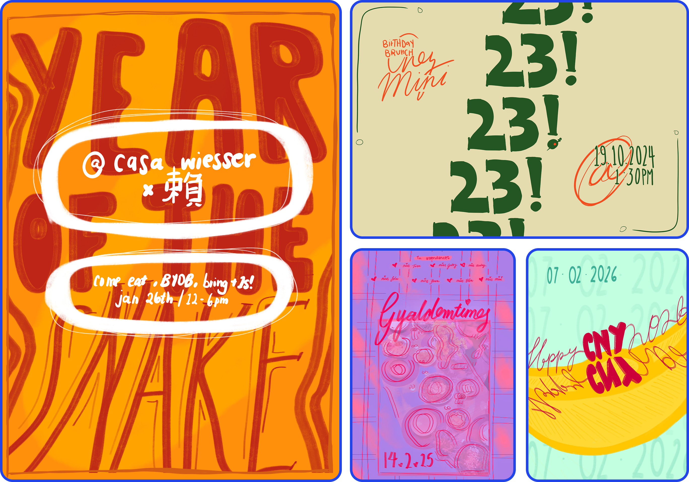

EVENT FLYERS

Fly posting is illegal in the UK, and that makes me sad. When you see flyers on designated bulletin boards, that's at the expense of other flyers being buried under a pile of flyers! Sad!
In the spirit of community bulletin boards and freely putting up flyers on the street, I decided to start doing so in the privacy of my own home. It's a really, really lovely way to memorialise a fun evening or great party. Also, I wish I had more, which serves as a fantastic incentive to dream up the next gathering.
I've done a few for events I've hosted, and while I usually intend to send them out prior to the event, I've historically gotten way too caught up in other hosting tasks to get around to it. Regardless, I reliably send and print them out post-hoc.
Thus far, we have my 23rd Birthday Brunch, Chinese New Year (of the Snake! AND of the Horse!), and Galentine's Dinner Party. This page will be continually updated!
I don't know where else this list would live, so my Parties-To-Host list is as follows:
- 60s-themed house party
- Clothes swap (anything can be a party if you will it)
- Art-by-friends auction
- Sports day @ Parliament Hill